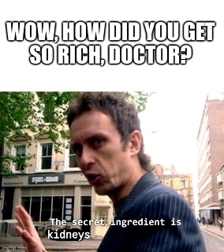
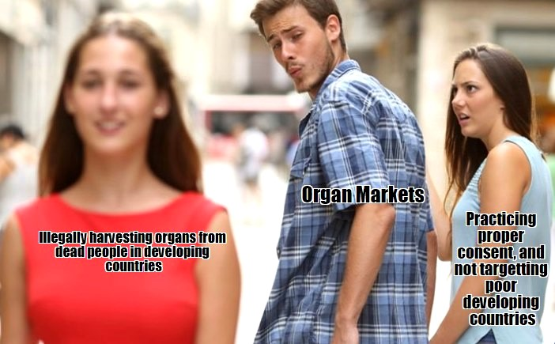

What is Organ Harvesting and Why Does it Happen?
Organ harvesting is when, well, organs are harvested. Organ harvesting can be used for good, like in the
case of
willing organ donors giving their organs for medical purposes after they die. But it can also be used for
illegal
purposes, like forced organ harvesting. People can be forced to have their organs surgically removed, like
in
the case of thousands of Falun Gong practitioners in China. People can also sell their organs willingly on
the
illegal market, usually getting involved in schemes where donors receive around 3.33% of the proceeds from
selling their kidneys, such as a person in a poorer country selling one of their kidneys for $5,000 USD, and
an
illegal recipient buying it for $120,000 USD, in which case the doctors make all the money from selling the
organ.


Pros and Cons of Organ Harvesting
Pros:
- Could potetially save a life.
- May give the patient a chance at a better life.
- Gives the doctor a chance to learn more about the human body.
Cons:
- Small chance of going against religious or family beliefs
- Could risk the donor’s health
- Could risk the patients' health
- Patients body may reject the organ
- The organ may not be available on time

Legality/Ethics of Organ Harvesting
One of the biggest issues with organ harvesting deals with consent with the patient, as many are
dead individuals, and do not establish an agreement beforehand. Not to mention, this practice is heavily
unregulated and illegal in most places, thus making issues like these dangerous, but “well paying”.
Morals are difficult to consider since many patients come from poor countries and depend on these practices
for extra well needed money. Yet, in legality, as this is unregulated court issues are difficult to follow.
The THO Act passed in India however, banned the selling of organs, yet the act still continues to this day.
In an extra thought, many mainstream big religions, such as the Catholic Church, do not have comments on organ
harvesting, but instead do on donation.


Our Stance
Our group strongly believes that illegal organ harvesting be illegal. This is because illegal organ
harvesting is both unethical and dangerous for both the donor and the recipient. This is because when
organs are harvested illegally, you do not know who and in what conditions the organ was taken out, and how
it was handled before being transplanted. Illegal organ harvesting and transplant also preys on people who
have less money. This is because people with less money are willing to sell their organs to make ends meet,
and rich people buy the organs off the poor people. The root to this problem is the fact that there are
not that many organs available for transplant. To fix this problem, we need to make selling organs legal.
You may think this will accelerate the process of people doing shady things, you are wrong. There are many
people in the world that believe that they have a right to sell their own organs. So, if we combine these
things together, we can make a legal and licensed organ market. If we do this, we will get more organ that
we can give to people who are in need.